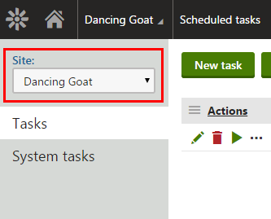
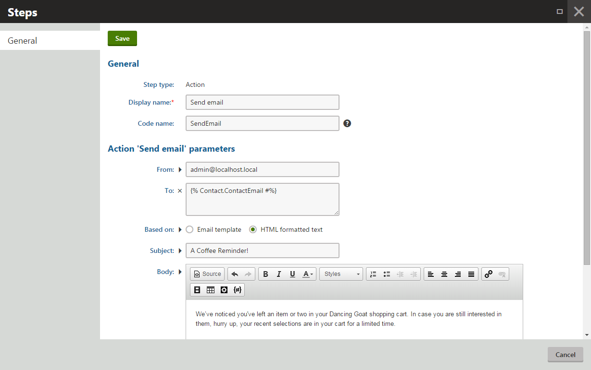
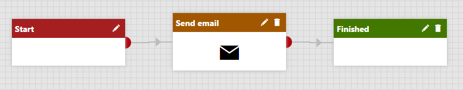

Walkthrough - Sending an automated reminder of an abandoned shopping cart
This chapter provides a step-by-step example that you can follow to create a new marketing automation process from start to end. In this walkthrough, the goal is to send an automated email when a customer leaves the website with the shopping cart that contains products. This scenario presumes the situation when a customer considers purchasing some products but then changes their mind, and the store administrators want to remind the customer of the products.
In such scenario, customers can be:
Registered – the customer has a user and a contact assigned.
Anonymous with a known email address – the customer has a contact with an email assigned.
Anonymous without a known email address.
The abandoned cart reminder works with the first two groups – registered customers and anonymous customers whose email address the system knows. You cannot reach customers whose email the system does not know.
The walkthrough consists of the following steps:
You need to enable on-line marketing features to be able to work with this feature.
Setting up after how many hours shopping carts are considered as abandoned.
Creating a scheduled task for marking shopping carts as abandoned.
Creating a marketing automation process for sending abandoned shopping cart reminders.
See the complete example at work on the sample Dancing Goat site.
Setting after how many hours shopping carts are considered as abandoned
As with most of the e-commerce settings, you can adjust the time after the shopping carts are considered as abandoned for the current site or globally for all your sites running on the Kentico instance. If you run more sites on your instance and all sites should use the same number of hours, use global settings; otherwise, we recommend that you choose site settings.
If you are not sure about these settings, see Choosing site or global e-commerce configuration to learn more information about types of e-commerce settings.
Open the Store configuration application (if you want to specify the setting for the current site) or the Multistore configuration application (if you want to specify the setting globally).
In the Shopping cart category of the Store settings -> General tab, enter the following properties to the Mark shopping cart as abandoned after (hours) field:
Clear the Inherit from global settings option (only if you work in the Store configuration application).
Type the desired number of hours after which shopping carts should be considered as abandoned to the text box, for example 15.
Click Save.
The system updates the settings and scheduled tasks working with this setting use the specified number of hours.
Kentico EMS required
Features described on this page require the Kentico EMS license.
Creating a scheduled task for marking shopping carts as abandoned
To set up sending of automated reminders about abandoned shopping carts, you need to create a scheduled task that selects and marks abandoned shopping carts.
Open the Scheduled tasks application.
Switch to the desired site.

Switching to a siteYou cannot create the task as global. If you do so, the task will not have any effect.
Click New task.
Enter the following properties:
Task display name: Mark shopping cart as abandoned
Task provider:
Assembly name: CMS.Ecommerce
Class: CMS.Ecommerce.MarkCartAbandoned
Task enabled: Yes (selected)
Enter the other properties according to your needs.
Click Save.
The system now marks abandoned shopping carts in the set recurrence.
Creating a marketing automation process for sending abandoned shopping cart reminders
To send the reminders, create a marketing automation process.
Set properties of the process
First, you need to create a process and specify its properties.
Open the Marketing automation application.
Click New process.
Enter the following properties:
Display name: Abandoned shopping cart
Code name: leave blank
Click Save.
After saving, enter the following properties:
Enabled: Yes (selected)
Start the process: If the same process is not running concurrently
Click Save.
Switch to the Triggers tab.
Click New trigger.
Enter the following properties:
Display name: Shopping cart marked as abandoned
Type: Contact performed an activity
Activity type: Shopping cart abandoned
Additional conditions: leave blank
Click Save.
The process is now created without any process steps.
Design the process
Second, create the needed process steps. The configuration steps follow the previous steps.
Switch to the Steps tab.
Place the Send transactional email step onto the grid on the line between the Start and Finished steps.
Edit the step by clicking the pencil icon next to its name.
Enter the following properties:
From: enter your email address, e.g. admin@localhost.local
To: {% Contact.ContactEmail %}
Based on: HTML formatted text
Alternatively, if you have an email template prepared, you can select Email template and then the specific template.
Subject: A Coffee Reminder!
Body: type the body of the email. Use macros to generate content and links for the specific contact, for example:
Macro example{%// Gets the site object on which the "Shopping cart abandoned" activity occurredsite = System.GetObject("cms.site", ActivitySiteID);// Returns the URL of the shopping cart page with the restored content of the abandoned shopping cart"http://"+ site.SiteDomainName + ShoppingCartURL(site.SiteName, ActivityValue)%}{%// Gets a list of the items (products) in the abandoned shopping carts and displays them using the specified transformationShoppingCartProducts(ActivityValue).ApplyTransformation("DancingGoat.Transformations.AbandonedCartProducts")|(encode)false%}The ActivityValue in the macros stores the abandoned shopping cart's identifier (GUID), and ensures that the new cart contains the products from the abandoned cart. The ActivitySiteID stores the identifier of the site where the activity occurred.
For more information, see:

Click Save.
Close the step.

The Send email step added
The marketing automation process is now completed. The system automatically sends an email after the specified number of days based on the specified HTML text (or an email template) to every customer who puts products in the shopping cart and then leaves.
Designing more complicated processes
If you want to design a more complex process, see another walkthrough describing in more detail all steps of creating a marketing automation process.